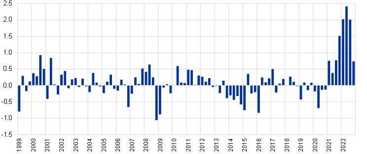
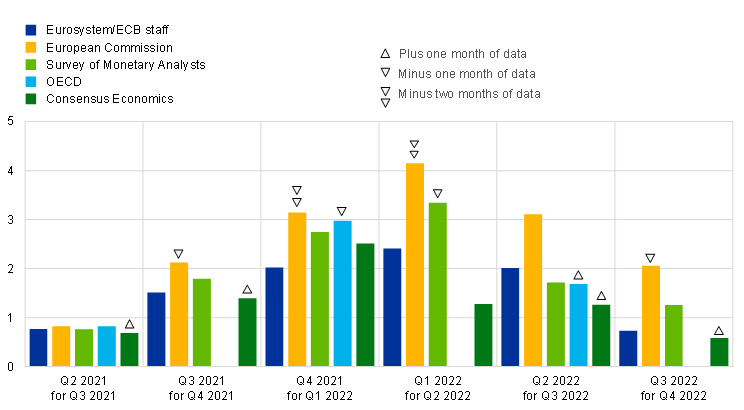
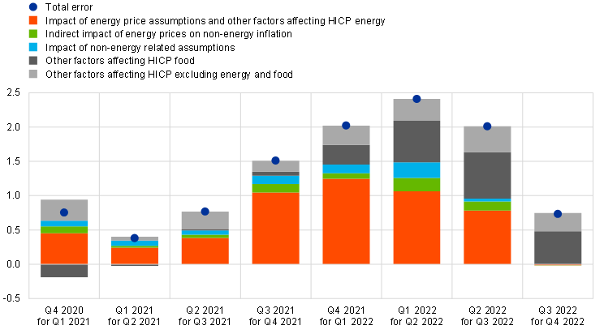
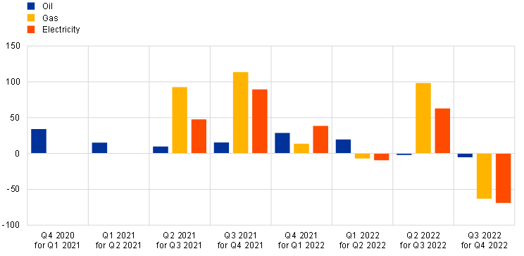

Published as part of the ECB Economic Bulletin, Issue 1/2023.
The accuracy of the Eurosystem and ECB staff short-term inflation projections for the euro area deteriorated following Russia’s invasion of Ukraine before improving in the last quarter of 2022. There were euro area inflation surprises on the upside in 2021 and 2022. In April 2022 the ECB published an analysis of the reasons for these surprises and compared the performance of the staff projections with forecasts by other institutions and the private sector.[1] After this publication, the performance of the staff short-term projections for the next quarter initially deteriorated further following dramatic spikes in energy and food commodity prices in the wake of Russia invading Ukraine in February 2022. In the subsequent quarters, while still surprising persistently on the upside, the magnitude of errors was reduced and in the last quarter of 2022 this was back within the range of absolute projection errors observed before the pandemic (Chart A).
Chart A
One-quarter-ahead HICP inflation projection errors in Eurosystem and ECB staff projections since 1999
(percentage points)

Sources: Eurostat and Eurosystem/ECB staff macroeconomic projections for the euro area.
Notes: Errors are defined as outturn minus projection in the quarter following the publication of the projections. For example, the last observation shows the outturn for the fourth quarter of 2022 minus the value projected for that quarter in the September 2022 ECB staff macroeconomic projections.
Other international institutions and private forecasters have under-predicted short-term inflation to a similar extent. Chart B shows the one-quarter-ahead projection errors for the euro area by Eurosystem/ECB staff in comparison with those from other forecasters.[2] The broad picture of strong under-predictions in one-quarter-ahead inflation projections has been common to all forecasters since early-2022, with Eurosystem/ECB staff projections broadly in the middle of the range of projections. When making such comparisons, it is important to note the information set available when each forecast was produced. Chart B selects the publications from each forecaster that were produced closest to the cut-off date for the Eurosystem/ECB staff projections. Despite this, remaining differences in the publication dates imply that some forecasters, such as those surveyed by Consensus Economics, often had an additional month of HICP data (and other important indicators such as energy commodity prices) in the current quarter relative to other forecasters, while some forecasters, such as the European Commission, tended to have one month less data. These differences (indicated by the arrows in Chart B) can explain some of the variations in forecast performance, especially in the course of 2022 when the sequential increases in inflation were especially strong.
Chart B
One-quarter-ahead errors for euro area HICP inflation projections by forecaster
(percentage points)

Sources: Eurosystem/ECB staff projections, Consensus Economics, Survey of Monetary Analysts (SMA), European Commission, OECD and Eurostat.
Notes: For other forecasters, the errors are shown for publications where the corresponding cut-off date is closest to that of the Eurosystem/ECB staff projections. For the SMA, the median of survey respondents is shown. The arrows indicate differences in the months of available HICP data at the cut-off point for each publication relative to the Eurosystem/ECB staff projections. An upward arrow indicates one additional month of data, a downward arrow indicates one month less data, and two downward arrows indicate two months less data. Quarterly projections from the OECD are only available twice per year and therefore no error is shown in the first and third quarters.
Errors in terms of conditioning assumptions for energy commodity prices continue to account for a significant albeit declining share of the overall Eurosystem/ECB staff inflation projection errors (Chart C). As with projections made by all other major institutions, the Eurosystem/ECB staff projections depend on a set of technical assumptions about the evolution of key financial and non-financial variables. These assumptions, such as the future evolution of energy commodity prices, are “technical” in the sense that they are treated as exogenous to the projections and, in most cases, are set according to market-based measures such as futures prices. As such, these are not adjusted according to expert assessment by staff. A key finding of the analysis of inflation projection errors published by the ECB in April 2022 was that errors in these assumptions, particularly for energy commodity prices, accounted for, on average, around three-quarters of the overall errors up to the first quarter of 2022. Since then, the conditioning assumptions continued to play a large, albeit declining, role in the inflation errors in the second and third quarters of 2022, and for the fourth quarter of 2022 they played only a negligible role (see the red, green and blue bars in Chart C). The assumptions for energy commodity prices have overall surprised sharply on the upside in all quarters over the last two years except for the fourth quarter of 2022 (Chart D). Given the decoupling of wholesale gas and electricity prices from oil prices, it became clear through the course of 2021 that a reliance on oil prices as an indicator for energy inflation forecasting was no longer sufficient.[3] As a consequence, more granular tools needed to be developed amid the surge in gas and electricity prices. New technical assumptions – also based on futures prices – for gas and electricity prices have, however, been much larger and more erratic than for oil prices, with some huge under-predictions in the second half of 2021 and in the third quarter of 2022 and large over-predictions in the final quarter of 2022. The contribution of errors related to consumer energy prices (summarised by the red bars in Chart C) has been persistently large, in part reflecting the complexity of the pass-through of wholesale gas and electricity prices to consumer prices, whereby regulation, fiscal measures adopted by euro area countries to compensate for high energy prices, contract types and other price setting and price measurement factors imply a more heterogenous and uncertain pass-through than is the case for oil prices to transport fuel prices. Although the pass-through of gas and electricity prices is typically more delayed, the speed of the pass-through may have increased over the past year. This may have contributed to the large under-predictions of consumer price inflation. Moreover, forecasters may have overestimated the impact of fiscal measures in reducing inflation.
Chart C
Decomposition of recent one-quarter-ahead HICP inflation errors in the Eurosystem/ECB staff projections
(percentage points)

Source: ECB calculations.
Notes: “Total error” is the outturn minus the projection. “Indirect impact of energy prices on non-energy inflation” is the sum of the indirect effects of oil, gas and electricity prices. (For oil, these are based on the elasticities derived from the Eurosystem staff macroeconomic models, and for gas and electricity these are computed assuming an elasticity proportional to the oil price shock.) “Impact of non-energy related assumptions” represents the assumptions for short and long-term interest rates, stock market prices, foreign demand, competitors’ export prices, food prices and the exchange rate.
Chart D
One-quarter-ahead errors for energy commodity price assumptions
(percentages)

Sources: Refinitiv and ECB staff calculations.
Note: Electricity and gas price assumptions are available for the second quarter of 2021 onwards.
Over the course of 2022, the share of errors not related to energy commodity prices or other assumptions based on the standard elasticities has grown. The light and dark grey bars of Chart C indicate the contribution of errors in the HICP excluding food and energy and HICP food components respectively, which cannot be explained by errors in the assumptions based on the standard elasticities. These have accounted for an increasing share of the overall projection errors since the first quarter of 2022, reaching 50% for the third quarter of 2022 and almost 100% for the fourth quarter. These errors could relate to the faster-than-expected pass-through of global supply chain bottlenecks and the stronger-than-expected economic recovery and associated post-pandemic reopening effects, mainly affecting HICP inflation excluding food and energy. While these factors were identified in the staff analysis as driving inflation, their precise impact and persistence was hard to model and to predict given their exceptional nature. Related to this, the euro area labour market was also stronger than expected, with unemployment consistently surprising on the downside and wages on the upside for most projection rounds over the last two years. Moreover, errors may also reflect indirect effects of spikes in energy prices on non-energy inflation and, in particular, on food inflation, beyond what is captured by models based on historical developments, also given the decoupling of gas from oil prices, with the former playing an important role in food production costs. Non-linear effects owing to the exceptional size and composition of commodity price shocks (with a more significant role played by gas and electricity) may have led to a much faster pass-through than suggested by models based on historical relationships. Furthermore, the high inflationary environment may have enabled easier repricing and required faster resetting of prices than standard models assume.
Eurosystem and ECB staff are continuing to re-evaluate their projection techniques and to provide additional analyses that can inform projections in times of high uncertainty. Improving staff forecasting models is an ongoing process that takes place via regular exchanges within various Eurosystem technical forums. Nevertheless, in periods where the economy faces exceptional shocks – such as those that have occurred in recent years – it is important to emphasise the uncertainty surrounding baseline projections. Projection errors relate not only to the limits of models in capturing the transmission of such shocks but also to the assumptions made about their future evolution. For example, after the Russian invasion of Ukraine in February 2022, although the staff baseline projections continued to be conditioned on the average expectations priced by markets for the future evolution of wholesale energy prices, staff identified significant upside risks in case supplies from Russia were significantly reduced. Such risks and uncertainties were captured via risk-specific analyses, alternative scenarios and other sensitivity analyses. Such additional analysis serves as an important input to the ECB’s monetary policy decisions, in addition to the baseline projections and other analyses by staff.
See the box entitled “What explains recent errors in the inflation projections of Eurosystem and ECB staff?”, Economic Bulletin, Issue 3, ECB, 2022. See also the box entitled “The performance of the Eurosystem/ECB staff macroeconomic projections since the financial crisis”, Economic Bulletin, Issue 8, ECB, 2019. In addition, a full database of past Eurosystem/ECB staff macroeconomic projections is available to the public via the ECB’s Statistical Data Warehouse, which allows researchers to easily assess the performance of the projections. The processes and tools used in producing the staff projections are described in a guide which is also available on the ECB’s website.
Although the International Monetary Fund (IMF) also regularly publishes projections for the euro area in the context of its World Economic Outlook, these projections are not published at a quarterly frequency and are not included in Chart B. The IMF published an analysis of its own inflation forecast errors in the October 2022 World Economic Outlook. It showed that IMF staff also substantially under-predicted inflation in 2021 and 2022. Such under-predictions were common across advanced and emerging economies, with upside surprises in 2021 related to faster-than-expected demand recovery, while errors in 2022 were relatively concentrated in the non-core components related to energy and food supply shocks following the war in Ukraine.
See Box 3 of “Eurosystem staff macroeconomic projections for the euro area, December 2021”, published on the ECB’s website on 16 December 2021.